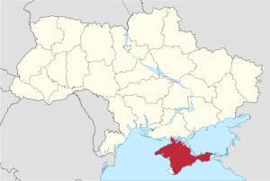
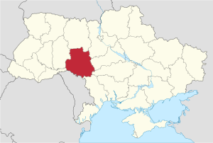
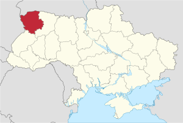

Територіальний устрій України
Області України
Область — назва однієї з 25 адміністративних одиниць України, утворених з метою здійснення державної політики щодо збалансованого розвитку територій[2]. Україна є унітарною державою, тому області мають юридичну компетенцію, визначену Конституцією України та законом[3].
Кожна адміністративно-територіальна одиниця має територію та межі, що встановлюються відповідно до Закону Про територіальний устрій України[2]. Кожна область має свій обласний центр. Назви областей встановлюються Конституцією України. 21 області України названо за назвою свого центру. Волинська має центр Луцьк, Закарпатська — центр Ужгород, Кіровоградська — центр Кропивницький. За площею найбільша область України є Одеська область, а найменша — Чернівецька область.
Області поділяються на райони (від 3 до 8 районів в області).
Перевірка спецсимволу "~"
- АР Крим: (кримськотат: Qırım Muhtar Cumhuriyeti, Кирим Мухтар Джумхурієті) представницьким органом Автономної Республіки Крим є Верховна рада Автономної Республіки Крим.
- Вінницька: утворена 27.02.1932 (Вінницький, Гайсинський, Жмеринський, Могилів-Подільський, Тульчинський, Хмільницький) частини ввійшли до Київської (1932), Житомирської, Кам'янець-Подільської (1937) і Черкаської (1954), приєднана частина Київської (1937); центр — Вінниця
- Волинська: утворена 4.12.1939 (Володимирський, Камінь-Каширський, Ковельський, Луцький); центр — Луцьк
- Дніпропетровська (розм. Дніпропетровщина, Січеславщина): утворена 27.02.1932; частини ввійшли до Донецької (1932), Миколаївської (1937) і Запорізької (1939); центр — Дніпро
- Донецька: утворена 17.07.1932 з частин Дніпропетровської і Харківської, у 1938 році розділена на Сталінську і Ворошиловградську; з 3.06.1938 по 9.11.1961 — Сталінська; центр — Донецьк (до 22.07.1932 — Артемівськ)
- Житомирська: утворена 22.09.1937 з частин Вінницької та Київської; центр — Житомир
- Закарпатська: утворена 22.01.1946 з території Закарпатської України; центр — Ужгород
- Запорізька: утворена 10.01.1939 з частин Дніпропетровської і Миколаївської; частина ввійшла до Херсонської (1944); центр — Запоріжжя
- Івано-Франківська: утворена 4.12.1939 з Городенківського, Долинського, Калуського, Коломийського, Косівського, Надвірнянського, Рогатинського, Снятинського, Станіславського і Тлумацького повітів; до 9.11.1962 — Станіславська; центр — Івано-Франківськ
- Київська: утворена 27.02.1932; частини передані до Харківської, Чернігівської (1932), Вінницької, Житомирської, Полтавської (1937), Кіровоградської (1939) і Черкаської (1954) областей, Київської міськради (1937, 1988), приєднані частини Вінницької (1932), Полтавської (1954) і Чернігівської (1987) областей; центр — Київ
- Кіровоградська: утворена 10.01.1939 з частин Київської, Миколаївської, Одеської і Полтавської; частина ввійшла до Черкаської (1954), приєднана частина Одеської (1954); центр — Кропивницький
- Луганська: утворена 3.06.1938 з частини Донецької; з 3.06.1938 по 5.03.1958 і з 5.01.1970 по 4.05.1990 називалась Ворошиловградською; центр — Луганськ
- Львівська: утворена 4.12.1939 з Бібрківського, Бродського, Городоцького, Жолкевського, Золочівського, Кам'янського, Львівського, Любачівського, Перемишлянського, Рава-Руського, Радехівського, Сокальського, Яворівського повітів; частина території відійшла до Польщі (1944), приєднані частина території Польщі (1951), Дрогобицька область (1959); центр — Львів
- Миколаївська: утворена 22.09.1937 з частин Дніпропетровської та Одеської; частини ввійшли до Запорізької і Кіровоградської (1939), Херсонської (1944), приєднані частини Одеської області (1944, 1954); центр — Миколаїв
- Одеська: утворена 27.02.1932; частини передані до Миколаївської (1937, 1944, 1954) і Кіровоградської (1939, 1954), приєднані частина Молдавської АРСР (1940) та Ізмаїльська область (1954); центр — Одеса
- Полтавська: утворена 22.09.1937 з частин Київської і Харківської; частини передані до Кіровоградської і Сумської (1939), Київської і Черкаської (1954); центр — Полтава
- Рівненська: утворена 4.12.1939 з Дубенського, Здолбунівського, Костопільського, Ровенського і Сарненського повітів; до 11.06.1991 — Ровенська; центр — Рівне
- Сумська: утворена 10.01.1939 з частин Полтавської, Харківської і Чернігівської, частина відійшла до Чернігівської (1965); центр — Суми
- Тернопільська: утворена 4.12.1939 з Бережанського, Борщівського, Бучацького, Заліщицького, Збаразького, Зборівського, Капачинського, Кременецького, Підгаєцького, Скалатського, Тарнопольского, Трембовлянського і Чортківського повітів; до 9.08.1944 — Тарнопольська; центр — Тернопіль
- Харківська: утворена 27.02.1932; частини ввійшли до Донецької і Чернігівської (1932), Полтавської (1937) і Сумської (1939), приєднана частина Київської області (1932); центр — Харків
- Херсонська: утворена 30.03.1944 з частин Запорізької та Миколаївської; центр — Херсон
- Хмельницька: утворена 22.09.1937 з частини Вінницької; до 4.02.1954 — Кам'янець-Подільська; центр — Хмельницький (до травня 1941 року — Кам'янець-Подільський)
- Черкаська: утворена 7.01.1954 з частин Вінницької, Київської, Кіровоградської і Полтавської; центр — Черкаси
- Чернівецька: утворена 7.08.1940 з територій Північної Буковини і північної частини Бессарабії; центр — Чернівці
- Чернігівська: утворена 15.10.1932 з частин Київської і Харківської; частини передані до Сумської (1939) і Київської (1987), приєднаний Талалаївський район Сумської області (1965); центр — Чернігів
- Курська область:Lorem
Історичні землі України що ТИМЧАСОВО знаходяться в складі Росії:
- Кубань, або Малиновий Клин — історичний регіон на Північному Кавказі, заселений українцями, зокрема запорізькими козаками з кінця XVIII століття.
- Стародубщина – найпівнічніша з українських етнічних земель. Землі частини нинішньої Брянської області Росії раніше були в складі Чернігівського князівства, згодом — окремим полком у складі Гетьманщини, а після встановлення російської імперської влади на українських землях належали до Чернігівської губернії.
- Слобожанщина - Терени Східної Слобожанщини також відомі під іншими назвами, наприклад Острогощина — від назви Острогозького козацького полку. Зараз землі Східної Слобожанщини перебувають у складі чотирьох областей Росії: Курської, Білгородської, Воронізької та Ростовської.
- Українські клини в Росії — Зелений, Жовтий, Сірий - Землі, не згадані в указі президента, але про які часто говорять, порушуючи тему українців у Росії — Зелений, Сірий і Жовтий Клини, розташовані за межами суцільної української етнічної території. Спочатку клином українці називали земельний наділ, а до кінця XIX століття так стали називати заселені українцями землі на схід від основної території України. Відомі Зелений Клин, Зелена Україна, Закитайщина — територія Приамур'я, Зовнішня Маньчжурія, південної частини Далекого Сходу. Жовтий Клин — територія середнього і нижнього Поволжя та Сірий Клин або Сіра Україна — південь Західного Сибіру і Північного Казахстану.
Більше інформації за посиланням: Які території Росії історично населені українцями та чому
Автоно́мна Респу́бліка Крим (крим. Qırım Muhtar Cumhuriyeti, рос. Автономная Республика Крым), до 21 вересня 1994 — Респу́бліка Крим (крим. Qırım Cumhuriyeti), до 26 лютого 1992 — Кримська Автономна Радянська Соціалістична Республіка (крим. Qırım Muhtar Sotsialist Şuralar Cumhuriyeti) — адміністративна одиниця на півдні України, розташована на більшій частині Кримського півострова між 44°23' і 46°15' північної широти та між 32°29’ і 36°39’ східної довготи. Українською владою[3], ООН, ЄС визнається як територія, тимчасово окупована Російською Федерацією. ВР АРК у межах своїх повноважень приймає рішення та ухвалює постанови, які є обов'язковими для виконання в АР Крим. Урядом АРК є Рада міністрів Автономної Республіки Крим. Голова Ради міністрів АРК призначається на посаду і звільняється з посади Верховною Радою АРК за погодженням із Президентом України. Повноваження, порядок формування і діяльності Верховної Ради Автономної Республіки Крим і Ради міністрів Автономної Республіки Крим визначаються Конституцією України і законами України, нормативно-правовими актами Верховної Ради Автономної Республіки Крим з питань, віднесених до її компетенції. Правосуддя в Автономній Республіці Крим здійснюється судами, що належать до єдиної системи судів України; центр — Сімферополь.
Україна втратила контроль над основною територією Криму внаслідок її окупації ЗС РФ, після якої 16 березня 2014 року було незаконно проведено референдум, який не визнала Генеральна асамблея ООН. Чинні на той час органи місцевої влади АР Крим в односторонньому порядку проголосили незалежність Республіки Крим від України, після чого одразу ж рішенням органів влади РФ АР Крим була включена до складу Російської Федерації як новий суб'єкт зі статусом республіки[4]. Українська влада і більшість інших держав не визнають легітимність референдуму й постанови про незалежність.
Територія Криму протягом своєї історії перебувала під контролем різних держав та народів. Кіммерійці, греки, скіфи, готи, гуни, булгари, хозари, держава Київська Русь, візантійські греки, кипчаки, османські турки, татари Золотої Орди і монголи контролювали Крим протягом раннього періоду його історії. У 13-му столітті помітний вплив (особливо у Південному Криму) мали венеційці і ґенуезці. З середини XIV до кінця XVIII ст. входив до складу Кримського ханства й Османської імперії, а з кінця XVIII до 1917 року Російською імперією. Після Громадянської війни ввійшов до складу РРФСР, а у 1954 році був переданий УРСР. З 1991 року автономія у складі України.
Територією республіки проходить державний кордон України довжиною 821 км. До складу АР Крим не входить південний захід півострова, підлеглий Севастопольській міськраді, яка є одиницею загальнодержавного підпорядкування, та північна частина Арабатської стрілки, що входить до складу Херсонської області.
Ві́нницька о́бласть (Вінниччина) — область у центрі України. Населення становить 1 509 015 (1 січня 2022 р.).[2]
Вінницька область була утворена 27 лютого 1932 року, коли ЦВК СРСР затвердив постанову IV позачергової сесії ВУЦВК від 9 лютого 1932 року про створення на території України п'яти областей. Обласний центр — місто Вінниця населення якої станом на 1 січня 2022 року становить 369 739 осіб.[2] Розташована на правобережжі Дніпра в межах Подільської височини.
На заході межує з Чернівецькою та Хмельницькою, на півночі — з Житомирською, на сході — з Київською, Кіровоградською та Черкаською, на півдні — з Одеською областями України та з Молдовою.

Воли́нська о́бласть (Воли́нь) — область у північно-західній частині України Україні в межах Поліської низовини (понад 3/4 території) та Волинської височини. Межує на заході з Люблінським воєводством Республіки Польща, на півночі — з Брестською областю Республіки Білорусь, на сході — з Рівненською, на півдні — з Львівською областями України. Всього в межах області пролягає 395 кілометрів державного кордону. До складу Волинської області входить 4 райони: Луцький, Володимирський, Камінь-Каширський і Ковельський райони. На кордоні розташовано 9 пунктів переходу: Устилуг, Ягодин, Ізов, Доманове, Дольськ, Піща, Пулемець, Римачі, Заболоття.
